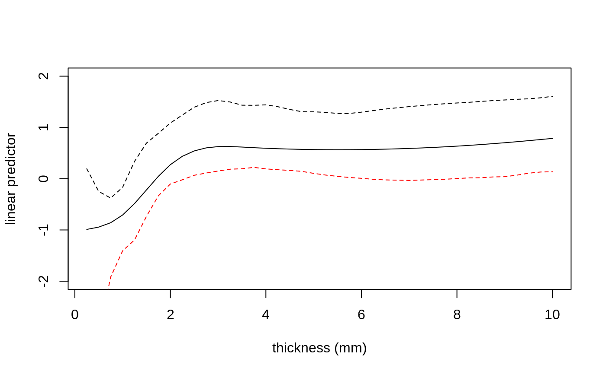

censboot.RdThis function applies types of bootstrap resampling which have been suggested to deal with right-censored data. It can also do model-based resampling using a Cox regression model.
censboot(data, statistic, R, F.surv, G.surv, strata = matrix(1,n,2), sim = "ordinary", cox = NULL, index = c(1, 2), ..., parallel = c("no", "multicore", "snow"), ncpus = getOption("boot.ncpus", 1L), cl = NULL)
| data | The data frame or matrix containing the data. It must have at least two
columns, one of which contains the times and the other the censoring
indicators. It is allowed to have as many other columns as desired
(although efficiency is reduced for large numbers of columns) except for
|
|---|---|
| statistic | A function which operates on the data frame and returns the required
statistic. Its first argument must be the data. Any other arguments
that it requires can be passed using the |
| R | The number of bootstrap replicates. |
| F.surv | An object returned from a call to |
| G.surv | Another object returned from a call to |
| strata | The strata used in the calls to |
| sim | The simulation type. Possible types are |
| cox | An object returned from |
| index | A vector of length two giving the positions of the columns in
|
| ... | Other named arguments which are passed unchanged to |
| parallel, ncpus, cl | See the help for |
An object of class "boot" containing the following components:
The value of statistic when applied to the original data.
A matrix of bootstrap replicates of the values of statistic.
The number of bootstrap replicates performed.
The simulation type used. This will usually be the input value of
sim unless that was "model" but cox was not
supplied, in which case it will be "ordinary".
The data used for the bootstrap. This will generally be the input
value of data unless sim = "weird", in which case it
will just be the columns containing the times and the censoring
indicators.
The value of .Random.seed when censboot started work.
The input value of statistic.
The strata used in the resampling. When sim = "ordinary"
this will be a vector which stratifies the observations, when
sim = "weird" it is the strata for the survival distribution
and in all other cases it is a matrix containing the strata for the
survival distribution and the censoring distribution.
The original call to censboot.
The various types of resampling are described in Davison and Hinkley (1997) in sections 3.5 and 7.3. The simplest is case resampling which simply resamples with replacement from the observations.
The conditional bootstrap simulates failure times from the estimate of
the survival distribution. Then, for each observation its simulated
censoring time is equal to the observed censoring time if the
observation was censored and generated from the estimated censoring
distribution conditional on being greater than the observed failure time
if the observation was uncensored. If the largest value is censored
then it is given a nominal failure time of Inf and conversely if
it is uncensored it is given a nominal censoring time of Inf.
This is necessary to allow the largest observation to be in the
resamples.
If a Cox regression model is fitted to the data and supplied, then the
failure times are generated from the survival distribution using that
model. In this case the censoring times can either be simulated from
the estimated censoring distribution (sim = "model") or from the
conditional censoring distribution as in the previous paragraph
(sim = "cond").
The weird bootstrap holds the censored observations as fixed and also the observed failure times. It then generates the number of events at each failure time using a binomial distribution with mean 1 and denominator the number of failures that could have occurred at that time in the original data set. In our implementation we insist that there is a least one simulated event in each stratum for every bootstrap dataset.
When there are strata involved and sim is either "model"
or "cond" the situation becomes more difficult. Since the strata
for the survival and censoring distributions are not the same it is
possible that for some observations both the simulated failure time and
the simulated censoring time are infinite. To see this consider an
observation in stratum 1F for the survival distribution and stratum 1G
for the censoring distribution. Now if the largest value in stratum 1F
is censored it is given a nominal failure time of Inf, also if
the largest value in stratum 1G is uncensored it is given a nominal
censoring time of Inf and so both the simulated failure and
censoring times could be infinite. When this happens the simulated
value is considered to be a failure at the time of the largest observed
failure time in the stratum for the survival distribution.
When parallel = "snow" and cl is not supplied,
library(survival) is run in each of the worker processes.
Andersen, P.K., Borgan, O., Gill, R.D. and Keiding, N. (1993) Statistical Models Based on Counting Processes. Springer-Verlag.
Burr, D. (1994) A comparison of certain bootstrap confidence intervals in the Cox model. Journal of the American Statistical Association, 89, 1290--1302.
Davison, A.C. and Hinkley, D.V. (1997) Bootstrap Methods and Their Application. Cambridge University Press.
Efron, B. (1981) Censored data and the bootstrap. Journal of the American Statistical Association, 76, 312--319.
Hjort, N.L. (1985) Bootstrapping Cox's regression model. Technical report NSF-241, Dept. of Statistics, Stanford University.
library(survival)#> #>#> #> #># Example 3.9 of Davison and Hinkley (1997) does a bootstrap on some # remission times for patients with a type of leukaemia. The patients # were divided into those who received maintenance chemotherapy and # those who did not. Here we are interested in the median remission # time for the two groups. data(aml, package = "boot") # not the version in survival. aml.fun <- function(data) { surv <- survfit(Surv(time, cens) ~ group, data = data) out <- NULL st <- 1 for (s in 1:length(surv$strata)) { inds <- st:(st + surv$strata[s]-1) md <- min(surv$time[inds[1-surv$surv[inds] >= 0.5]]) st <- st + surv$strata[s] out <- c(out, md) } out } aml.case <- censboot(aml, aml.fun, R = 499, strata = aml$group)#> Warning: no non-missing arguments to min; returning Inf#> Warning: no non-missing arguments to min; returning Inf#> Warning: no non-missing arguments to min; returning Inf#> Warning: no non-missing arguments to min; returning Inf#> Warning: no non-missing arguments to min; returning Inf#> Warning: no non-missing arguments to min; returning Inf#> Warning: no non-missing arguments to min; returning Inf#> Warning: no non-missing arguments to min; returning Inf#> Warning: no non-missing arguments to min; returning Inf#> Warning: no non-missing arguments to min; returning Inf#> Warning: no non-missing arguments to min; returning Inf#> Warning: no non-missing arguments to min; returning Inf#> Warning: no non-missing arguments to min; returning Inf# Now we will look at the same statistic using the conditional # bootstrap and the weird bootstrap. For the conditional bootstrap # the survival distribution is stratified but the censoring # distribution is not. aml.s1 <- survfit(Surv(time, cens) ~ group, data = aml) aml.s2 <- survfit(Surv(time-0.001*cens, 1-cens) ~ 1, data = aml) aml.cond <- censboot(aml, aml.fun, R = 499, strata = aml$group, F.surv = aml.s1, G.surv = aml.s2, sim = "cond")#> Warning: no non-missing arguments to min; returning Inf#> Warning: no non-missing arguments to min; returning Inf#> Warning: no non-missing arguments to min; returning Inf#> Warning: no non-missing arguments to min; returning Inf#> Warning: no non-missing arguments to min; returning Inf#> Warning: no non-missing arguments to min; returning Inf#> Warning: no non-missing arguments to min; returning Inf#> Warning: no non-missing arguments to min; returning Inf#> Warning: no non-missing arguments to min; returning Inf#> Warning: no non-missing arguments to min; returning Inf#> Warning: no non-missing arguments to min; returning Inf#> Warning: no non-missing arguments to min; returning Inf#> Warning: no non-missing arguments to min; returning Inf#> Warning: no non-missing arguments to min; returning Inf#> Warning: no non-missing arguments to min; returning Inf#> Warning: no non-missing arguments to min; returning Inf#> Warning: no non-missing arguments to min; returning Inf#> Warning: no non-missing arguments to min; returning Inf# For the weird bootstrap we must redefine our function slightly since # the data will not contain the group number. aml.fun1 <- function(data, str) { surv <- survfit(Surv(data[, 1], data[, 2]) ~ str) out <- NULL st <- 1 for (s in 1:length(surv$strata)) { inds <- st:(st + surv$strata[s] - 1) md <- min(surv$time[inds[1-surv$surv[inds] >= 0.5]]) st <- st + surv$strata[s] out <- c(out, md) } out } aml.wei <- censboot(cbind(aml$time, aml$cens), aml.fun1, R = 499, strata = aml$group, F.surv = aml.s1, sim = "weird")#> Warning: no non-missing arguments to min; returning Inf#> Warning: no non-missing arguments to min; returning Inf#> Warning: no non-missing arguments to min; returning Inf#> Warning: no non-missing arguments to min; returning Inf#> Warning: no non-missing arguments to min; returning Inf#> Warning: no non-missing arguments to min; returning Inf#> Warning: no non-missing arguments to min; returning Inf#> Warning: no non-missing arguments to min; returning Inf#> Warning: no non-missing arguments to min; returning Inf#> Warning: no non-missing arguments to min; returning Inf#> Warning: no non-missing arguments to min; returning Inf# Now for an example where a cox regression model has been fitted # the data we will look at the melanoma data of Example 7.6 from # Davison and Hinkley (1997). The fitted model assumes that there # is a different survival distribution for the ulcerated and # non-ulcerated groups but that the thickness of the tumour has a # common effect. We will also assume that the censoring distribution # is different in different age groups. The statistic of interest # is the linear predictor. This is returned as the values at a # number of equally spaced points in the range of interest. data(melanoma, package = "boot") library(splines)# for ns mel.cox <- coxph(Surv(time, status == 1) ~ ns(thickness, df=4) + strata(ulcer), data = melanoma) mel.surv <- survfit(mel.cox) agec <- cut(melanoma$age, c(0, 39, 49, 59, 69, 100)) mel.cens <- survfit(Surv(time - 0.001*(status == 1), status != 1) ~ strata(agec), data = melanoma) mel.fun <- function(d) { t1 <- ns(d$thickness, df=4) cox <- coxph(Surv(d$time, d$status == 1) ~ t1+strata(d$ulcer)) ind <- !duplicated(d$thickness) u <- d$thickness[!ind] eta <- cox$linear.predictors[!ind] sp <- smooth.spline(u, eta, df=20) th <- seq(from = 0.25, to = 10, by = 0.25) predict(sp, th)$y } mel.str <- cbind(melanoma$ulcer, agec) # this is slow! mel.mod <- censboot(melanoma, mel.fun, R = 499, F.surv = mel.surv, G.surv = mel.cens, cox = mel.cox, strata = mel.str, sim = "model") # To plot the original predictor and a 95% pointwise envelope for it mel.env <- envelope(mel.mod)$point th <- seq(0.25, 10, by = 0.25) plot(th, mel.env[1, ], ylim = c(-2, 2), xlab = "thickness (mm)", ylab = "linear predictor", type = "n")